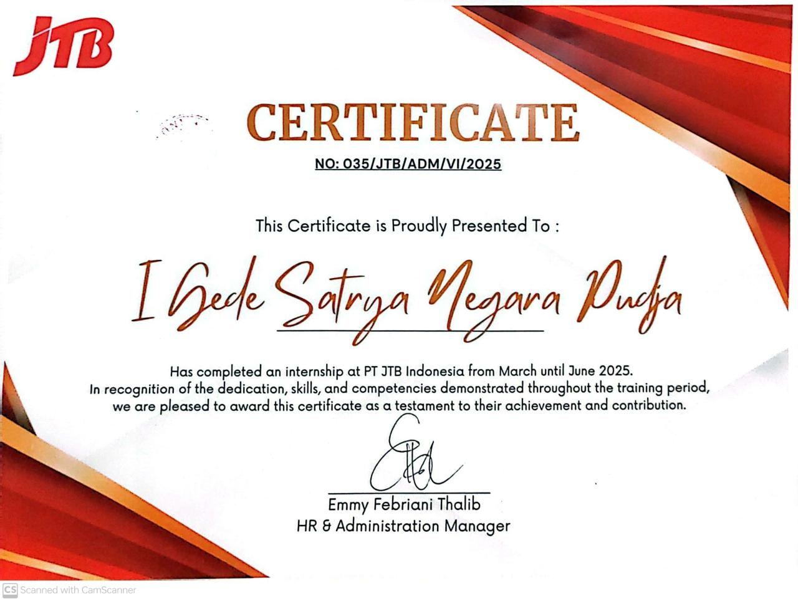
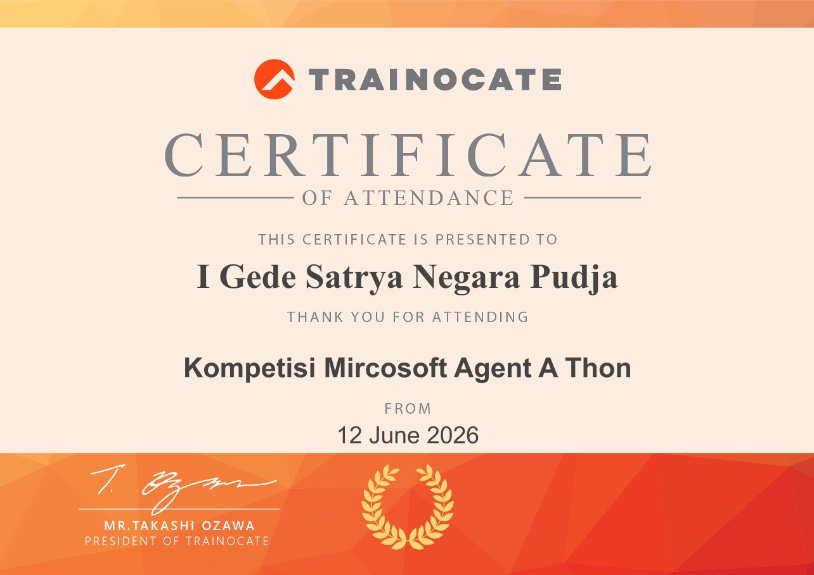
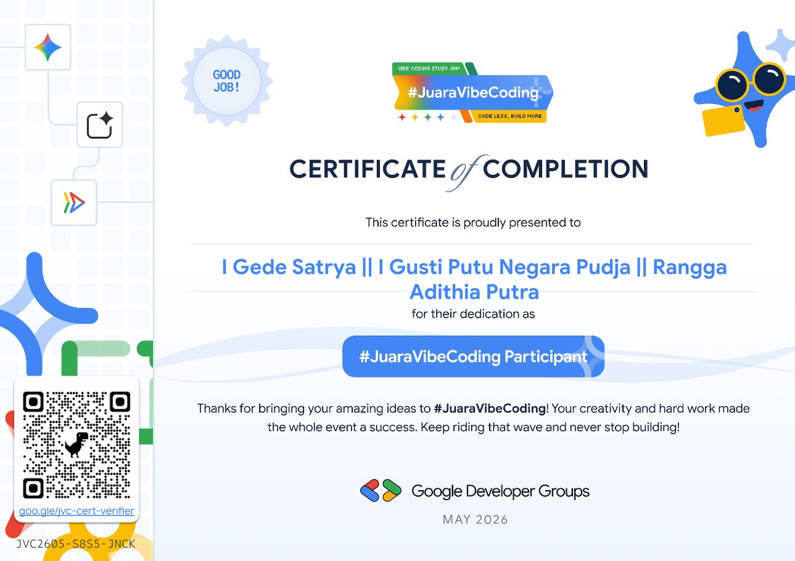
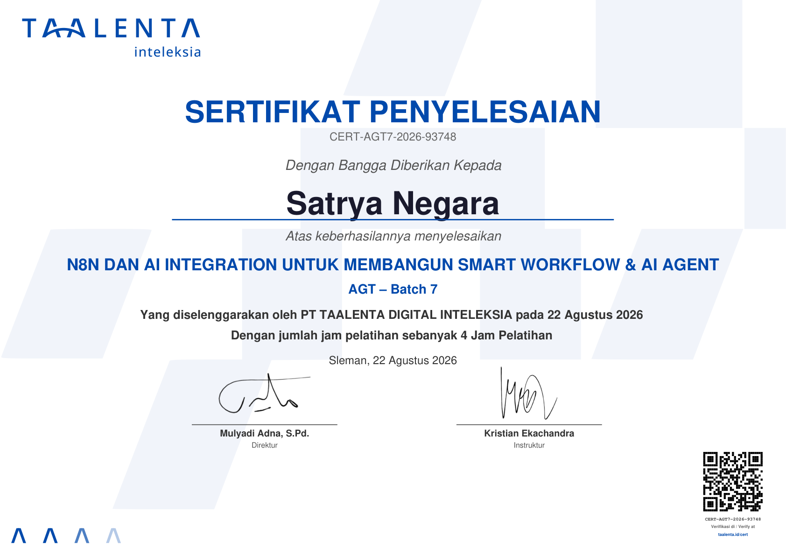
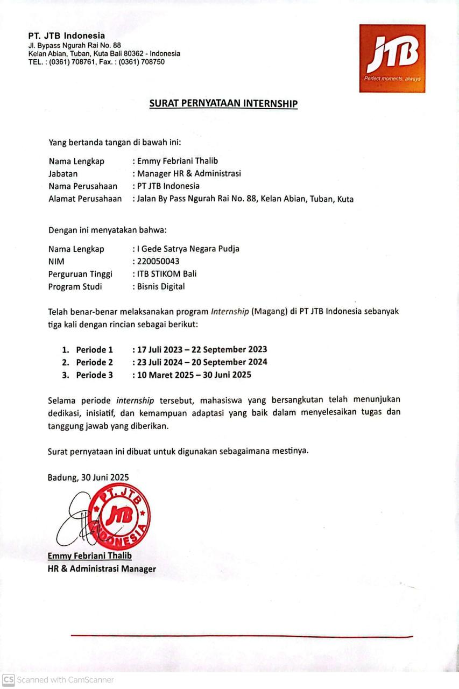

Digital Marketing & SEO Specialist, powered by AI Automation.
I'm Satrya Pudja. My background is digital marketing and SEO — competitor research, keyword and search-intent work, content strategy, campaign planning, marketing analytics. I build my own n8n automation on top of that background, so the research-to-content work I used to do by hand runs as a validated, repeatable pipeline instead.
Background
Marketing and SEO work, and the automation I built to scale it. Client details and analytics figures stay confidential where the engagement requires it — the entries below describe the actual scope of work, not invented numbers.
Marketing & SEO
Brought back across three separate internship periods over two years (per internship statement letter, PT JTB Indonesia HR & Administration), working on the company's Kura2Bus OTA (Online Travel Agent) product — starting from ground-level data entry and growing into competitive research, content, and paid search.
- Entered and maintained OTA product and booking data for Kura2Bus, keeping listings accurate for the channels that depended on that data.
- First hands-on exposure to how a tour operator's OTA data is actually structured and maintained — ground-level context that carried into the competitive research and paid-search work in the later internships below.
- Wrote articles about the Kura2Bus OTA product for publication beyond the company's own site — Medium, WordPress, and other article-distribution platforms — as a deliberate multi-channel SEO play, not single-source blog content.
- Wrote for each platform's own editorial and audience expectations rather than syndicating one identical piece everywhere, so the SEO value came from genuinely distinct content, not duplicated text.
- Ran competitive research on OTA players — how they positioned themselves, what they offered, and where their content strategy was strong or exploitable — before any content or campaign work started, not as an afterthought.
- Designed the Instagram content strategy from that research: content pillars and direction built around what the competitive analysis actually found, not a generic posting calendar.
- Conducted market analysis to support a new product launch — sizing the opportunity and identifying the audience it needed to reach, then translating that into concrete go-to-market input for the team.
- Presented findings and recommendations directly to the marketing team, moving research from a document into decisions the team could act on.
- Conducted competitor, market, and business-opportunity research to identify industry trends, content directions, and positioning opportunities.
- Researched keywords using Google Keyword Planner, Google Trends, and Google Search — narrowing candidates to what actually fit the budget allocation and the product's positioning, not just raw search volume.
- Built keyword lists for Google Ads campaigns directly from that research, turning budget and positioning constraints into an actual bidding plan rather than a generic keyword dump.
- Monitored ad and website performance in Google Analytics 4 — traffic, acquisition channels, and user behavior — to see what the campaigns were actually doing, not just what they were spending.
- Created AI-assisted SEO articles and blog content based on keyword research, search intent, and marketing objectives.
- Summarized research and analytics findings into practical recommendations for content, SEO, advertising, and business development.
- Managed Google Analytics tracking and performance monitoring since 2025 for the "Highlight of Central Bali" tour page — active users, geographic distribution, source/medium, and traffic channels.
- Managed SEO and content for kura2bus.com and the @kurakurabus Instagram account as part of the site's digital marketing.
- Conducted stakeholder interviews to understand the company's SEO, content, advertising, and digital marketing strategy.
- Developed recommendations for SEO improvement, content optimization, geographic targeting, and channel prioritization, while keeping company analytics data confidential.
- Conducted B2B market research to identify partnership opportunities for expanding the platform's market reach.
- Developed business strategy using SWOT analysis and business-model frameworks.
- Designed social media marketing strategy — audience identification, content direction, and channel positioning.
- Researched customer and market needs to inform feature and service recommendations.
AI & Automation
Personal and program projects — n8n workflow design, prompt engineering, RAG, and directing coding agents (Claude Code, OpenCode) against a written spec rather than ad hoc prompting.
- Architected a form-triggered n8n workflow that moves content through brief, research, planning, caption generation, HTML/CSS rendering, delivery, and logging stages.
- Designed bilingual dynamic prompts, structured JSON outputs, owner access control, hash-based validation, and a five-run daily quota for guest users.
- Integrated a web-search MCP, Google Sheets and Gmail via OAuth 2.0, and Telegram; published a GitHub Pages landing page with a tunnel-based public demo (see IG Content Builder above).
- Designed prompts for structured summaries, reviews, paper comparison, and document Q&A, backed by a three-tier retrieval pipeline — deterministic first, semantic vector search second, full-text last — plus BM25, embeddings, and reranking.
- Directed Claude Code and OpenCode against a written specification, implementation plans, review prompts, and debugging steps, while collaborating with a separate web development team on REST API integration.
- Built an agentic CV-screening solution using Microsoft Copilot's agent-building tools for the Microsoft Agent-A-Thon competition — an agent that reads submitted CVs and screens them against role criteria instead of a manual first-pass review.
- Completed the challenge and received a certificate for it (see Certificates below).
- Built a set of n8n pipelines for real business tasks — SWOT and TOWS strategy generation, receipt-to-Excel OCR extraction, GEO-optimized article drafting with score-gated publishing, and trip-brief-to-brochure document generation.
- Directed Claude Code and OpenCode against specs and implementation plans for each pipeline — node design, prompt design, and validation gates — rather than building node-by-node without a written plan.
- Built a churn-prediction model with stratified 5-fold cross-validation and an MLflow champion/challenger registry that only promotes a new model when it genuinely outperforms the one in production.
- Built a manual tool-calling chat agent over OpenRouter with 6 tools — prediction, SHAP explainability, RAG retrieval over retention-policy docs, and account-wide statistics — verified against a curated prompt set including prompts that should trigger zero tool calls.
- Ran 5 real adversarial prompt-injection attempts against the deployed agent — direct override, RAG-poisoning, roleplay, fake conversation history, and base64 obfuscation — all documented and all unsuccessful (see Telco Churn Advisor above).
- Completed a hands-on n8n and AI agent-building course — no-code automation fundamentals, building an AI agent in n8n, and a live practical exercise (inbox check → data retrieval → summarization → automated email) plus credential-security practices.
- Applied directly to the SWOT Generator project above (see Certificates below).
Selected work
Marketing, SEO, and product work — plus the automation and applications I built to scale it.
Featured
PT JTB Indonesia — Digital Marketing
Went head-to-head with OTA competitors before a single post went out — competitive research into how they positioned and won, an Instagram content strategy built directly on what that research found, and market analysis that shaped a new product launch. Strategy first, content second, in that order.
Kura2Bus.com — SEO & Web Analytics
Managed SEO and Google Analytics performance monitoring for kura2bus.com and its @kurakurabus Instagram — including the "Highlight of Central Bali" tour page, the subject of my bachelor thesis: 97 booking clicks, 1 completed transaction, and why.
IG Content Builder
Turns a topic brief into researched Instagram carousel concepts, captions, and visual content — the same research-to-content process from my SEO/content work, running as a pipeline instead of a manual task list.
Receipt OCR & Excel Export
Photograph a receipt, get back canonical structured JSON — vendor, line items, totals — or a ready-to-download spreadsheet. Built to handle messy, real-world receipt photos, not clean scans.
Meeting Notes Pipeline
Turns an uploaded recording (or a Google Drive link) into structured notes with decisions and action items — transcribed with Whisper, classified by meeting type, and emailed back as Markdown or PDF.
More projects
PT JTB Indonesia — Google Ads Specialist
Turned Google Keyword Planner, Google Trends, and Google Search research into keyword lists that actually matched the budget and the product's positioning — not the highest-volume keywords, the right ones — then tracked what those campaigns actually did in Google Analytics 4.
HariBersama.com — Product Manager
Led product strategy for a digital wedding invitation platform — B2B partnership research, SWOT-based business strategy, and social media marketing direction, translated into concrete feature and service recommendations.
GEO Article Builder
Researches a topic and drafts a long-form article structured for how generative-AI answer engines actually cite sources — applying GEO/AI-visibility fundamentals, not just traditional keyword SEO.
Itinerary Brochure Engine
A short trip brief becomes a formatted HTML + PDF travel brochure — schedule, route, practical guidance — with a travel-time guard and a QA gate that blocks prices, opening-hour claims, and OTA-style sales language.
SWOT Generator
Turns a business description into a structured SWOT analysis document — each quadrant grounded in the actual input, not generic filler, delivered as a formatted report.
Telco Churn Advisor
Churn prediction with an MLflow champion/challenger model registry, plus a tool-calling chat agent that decides for itself whether to predict, explain with SHAP, or pull retention-policy docs — stress-tested with 5 real prompt-injection attempts.
Academic Review Assistant
A standalone RAG tool (not an n8n workflow) for structured paper summaries, reviews, and document Q&A — deterministic retrieval, BM25, semantic search, embeddings, and reranking, built with Claude Code and OpenCode.
TourDriver Manager
A mobile-first app for private tour drivers in Bali — trips, fuel, and deposits logged through a WhatsApp-style quick-capture box ("besok 9 pagi ubud sarah 3 orang" becomes a booking), with receipt OCR and a close-trip flow built to take under 15 seconds.
PosLite
A lightweight point-of-sale system for small businesses — product and variant management, real-time stock tracking, sales reporting, and AI-generated insights, with daily summaries pushed out over WhatsApp and Telegram.
Gym Manager
Membership management for a gym — one-click check-in with auto-suggest search, member CRUD with photo upload, color-coded status by days to expiry, and a renewal flow with package selection and transaction logging.
From SEO to automation
My background is digital marketing and SEO — competitor research, content briefs, campaign reporting, the same process every time a new brief came in. n8n started as a way to stop doing that process by hand. The pipelines on this page grew out of the marketing work I already knew, then extended to receipts, meeting recordings, and business documents once I noticed they broke down into the same repeatable steps.
Skills & stack
Education
- Core coursework: digital marketing strategy, social media marketing, content and campaign planning, SEO, CRM fundamentals, marketing communication, consumer behavior, market research, business analysis, and data-informed decision-making.
- Applied this coursework through assignments in business idea research, campaign and content concept development, digital channel analysis, and marketing recommendations — not just theory.
- Bachelor thesis: website performance analysis for kura2bus.com's "Highlight of Central Bali" tour page using Google Analytics Explore (see Marketing & SEO background above).
- n8n automation and workflow orchestration — the same skill set behind the automation projects above, formalized through structured training rather than self-taught alone.
- Prompt engineering and RAG (retrieval-augmented generation) — deterministic retrieval, embeddings, and reranking, applied directly in the Academic Review Assistant project.
- Python, machine learning fundamentals, and MLOps — moving from workflow-level automation toward the underlying model and data layer.
- Databases, JSON, and REST APIs — the integration layer every workflow in this portfolio depends on.
- 4-hour hands-on course: AI agent and no-code automation fundamentals, n8n basics, building an AI agent in n8n, and a full live-practice exercise (inbox check → data retrieval → summarization → automated email), plus credential-security practices.
- Applied directly to the SWOT Generator project (see Certificates & Documents below).
Certificates & Documents

PT JTB Indonesia — Internship Completion
Certificate No. 035/JTB/ADM/VI/2025, for the March–June 2025 internship (see PT JTB Indonesia above).

Microsoft Agent-A-Thon
Certificate of attendance from Trainocate for the Microsoft Agent-A-Thon competition, 12 June 2026 — the CV-screening agent challenge above.

#JuaraVibeCoding
Certificate of completion from Google Developer Groups, May 2026 — for the Academic Review Assistant project above.

N8N & AI Integration — AGT Batch 7
Certificate CERT-AGT7-2026-93748, PT Taalenta Digital Inteleksia, 22 Aug 2026 — building an AI agent in n8n, applied to the SWOT Generator project above.

PT JTB Indonesia — Internship Statement Letter
Official letter from HR & Administration confirming all three internship periods: 17 Jul – 22 Sep 2023, 23 Jul – 20 Sep 2024, and 10 Mar – 30 Jun 2025 (see PT JTB Indonesia above).
Let's talk
SEO/content work that needs scaling, or a repetitive process that should already be automated — tell me about it.
satryanegara7@gmail.com · +62 812-3085-2477